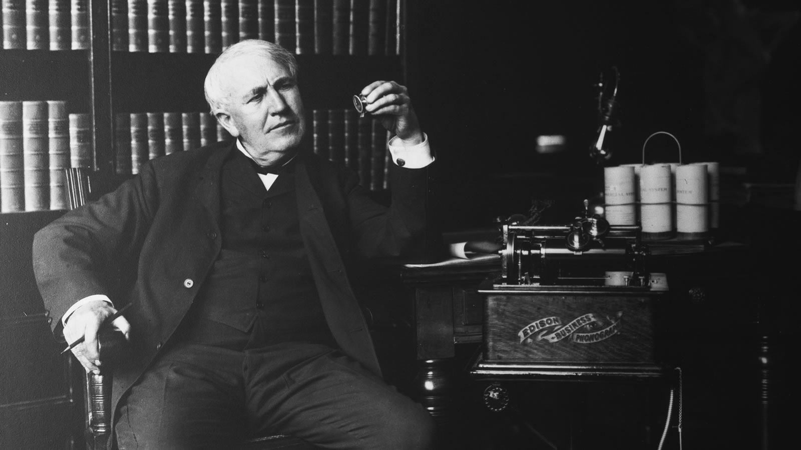

Thomas Alva Edison
American inventor and businessman

Thomas Edison with the Edison Business Phonograph (Oscar White/Corbis/VCG via Getty Images)
Timeline of Edison's life:
- 1847 - Born in Milan.
- 1854 - His family moved to Port Huron, Michigan.
- 1866 - Edison moved to Louisville, Kentucky.
- 1869 - His first patent was for the electric vote recorder, U.S. Patent 90,646 was granted.
- 1971 - On December 25, at the age of 24, Edison married 16-year-old Mary Stilwell
- 1874 - Edison began developing a multiplex telegraphic system, which could send two messages simultaneously.
- 1875 - At age 28, he enrolled in a four-year chemistry course at The Cooper Union for the Advancement of Science and Art.
- 1876 - Established an industrial research lab, in Menlo Park, New Jersey. Began work to improve the microphone for telephones
- 1878 - Demonstrated the phonograph before the National Academy of Sciences, Congressmen, Senators and US President Hayes.
- 1884 - Mary Edison died at age 29 on August 9, of unknown cause
- 1886 - Edison found a way to improve a Bell Telephone microphone.
- 1890 - This type of microphone was put in use and was used in all telephones along with the Bell receiver until the 1980s
- 1901 - Edison obtained a US and European patent for his nickel–iron battery and founded the Edison Storage Battery Company
- 1928 - Edison joined the Fort Myers Civitan Club.
- 1931 - Edison died of complications of diabetes on October 18, in his home, "Glenmont" in Llewellyn Park in West Orange, New Jersey